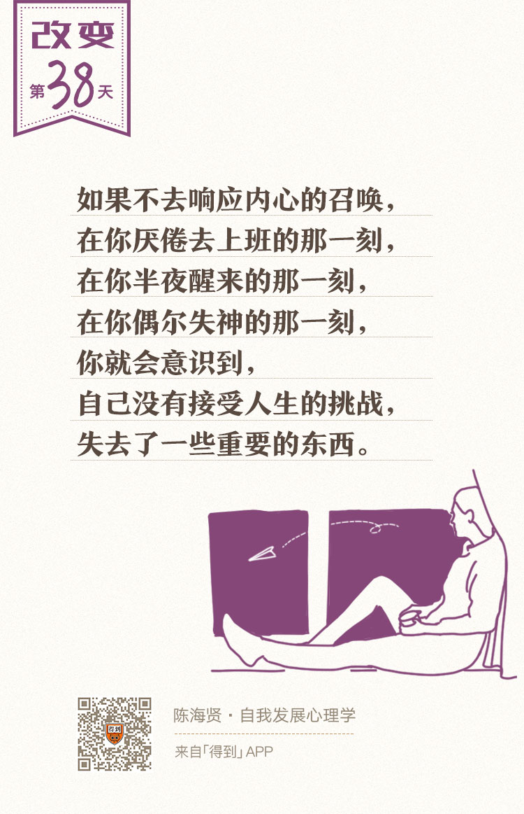

38丨职业转变：如何应对工作变动和职业转型？

欢迎来到《自我发展心理学》。
你好，我是陈海贤。
在前面的几节课里，我讲到了转变的三个心理历程：结束——迷茫——重生。接下来，我想分别讲讲生活中最常遇到，也是最重要的三种转变——工作的转变、关系的转变和创伤后的转变。
这一讲，我们就先来讲：工作的转变。
真实的自我存在吗？
我们生活在一个充满变动的时代。工作的变动，就是我们经常遇到的变动。
这也难怪，工作不仅是我们参与社会的途径，也是塑造自我、体现自我价值的途径。所以，我们每个人都希望自己能找一份好工作。
可是什么是好工作呢？
每年毕业季，很多优秀的大学生都会想去那些赚钱的行业、赚钱的大公司。有时候他们会说，进这些公司很难，因为竞争很激烈。
可是从另一个角度，这样的选择并不难，因为你不需要去思考我真正想要做的事情是什么，并根据自己的思考，做出独立的选择。
当然了，我觉得年轻人在职业选择上走常规的路，积累一些职业经验也是必要的。
可是我也见过很多人，有了一定经验以后，开始困惑：这个工作真正是我想要的吗？我真的要以这种方式过一生吗？很多人由此开始了艰难的职业转型。
这些年，我看到很多周围的人完成了，或者正在进行职业的转型。
有从IT男变成了一个作家的，有从公司高管变成心理咨询师的，也有从程序员变成木匠的。
有些职业转型跨度没那么大，可能只是从一个公司的部门换到了另一个部门，但是所经历的心理历程是类似的。
职业转型绝不是找一个能赚更多钱，有更大职业发展的工作那么简单。每一个职业背后，都有一个自我。
- 在公司做运营，这是一个自我；
- 在机关单位当公务员，这是一个自我；
- 在大学当老师、创业或者做一个自由职业者背后，都有一个自我。
这个自我关系到别人怎么看待我们，我们怎么看待自己，也关系到我们会怎么行动、思考和感受。
所以，职业的转变的过程，就是新旧自我更替的过程。而这，也是职业转变最难的地方。
前段时间我遇到一个来访者，她在一家IT公司做产品。产品的工作有很多的沟通，有时候也要去争取资源，可是她觉得自己不擅长这些。这让她有很多的烦恼。
她问我，自己是不是选错了职业，是不是更适合做那种有创意的、设计类的工作。我问她为什么这么想，她说，以前做过一个职业倾向测试，好像说自己更适合那一类的工作。
很多人都有类似的想法，通过类似职业倾向测验这样的工具，来发现真实的自己，然后根据这个真实的自己来规划自己的职业选择。
这种思维方式的问题在哪里呢？
我觉得，问题在于，当我们说发现真正的自己时，我们正在以一种静态的方式看待自我。
我们假设，自我是一个已经成型了的东西，只不过它被类似纱布之类的东西遮住了、蒙蔽了，所以你看不到它。而你所要做的，就是把遮住自我的纱布拿开，看清楚真正的自己是什么样的，然后根据这个真实的自我做出合理的职业选择。
而实际上呢？
在你做出选择之前，根本没有所谓“真实的自我”。所谓“真实的自我”，是在你寻找和选择的过程中，逐渐形成的。
选择一个“可能的自我”
与真实自我的假设相反，斯坦福大学认知心理学家黑兹尔·马库斯（Hazel Markus）提出一个关于可能的自我的理论。
这个理论说：与所谓的真实自我不同，我们每个人身上都存在着很多可能的自我。
这些可能的自我，有些是我们梦寐以求的理想化的自我，有些则是我们非常厌恶的、不愿意去扮演的自我。
这些不同的可能自我，在你的内心展开激烈的斗争。它们好像在对你喊：选我选我。你选了其中的一个自我，那另一个自我就会不断衰退直到消失。
而职业转型的过程，就是选择其中一个可能自我，让它跟真实的世界发生互动的过程。
如果这个可能的自我在现实中是适应的，那它就会逐渐成长起来，变成真实的自我。如果它不适应，那我们可能就要换一个可能的自我，重新做类似的尝试。
如果你已经转型成功了，回过头来，你会有一种“一切理当如此”的感觉。可实际上，在萌芽期，这些可能的自我只是你心里的一个念头。
以我自己为例。
我博士毕业以后，在浙大的心理中心工作。那里有我喜欢的部分，比如聪明的学生、教学和咨询，也有我不喜欢的部分，比如事业单位通常会有的种种约束。
我这个人生性自由，不习惯被约束，只想钻研自己的业务，对行政的东西总是不太上心，这给我自己带来了一些麻烦。
偶尔我也会冒出一个念头：我要不要辞职，去做一个自由执业的心理咨询师？
可是这只是偶尔想想。如果你那时候告诉我说，一年以后我会从浙大辞职，我一定会觉得你是在胡说八道。
一个小小的种子，最开始是不起眼的，它只是在安静的角落。
可是，一方面，我因为在网上写一些文章，被越来越多的人知道，另一方面我在工作中所受的束缚越来越多，我开始变得心浮气躁，经常觉得很疲惫，觉得别扭，做什么事都不顺。
这时候，这个偶然产生的念头，就逐渐变成了一个需要认真考虑的选项。
回过头来，也许你会觉得，这个念头是重要的，它像是在冥冥之中提示了你自己要走的路。这有一定道理，但也不是绝对的。
事实上，当时的这个念头，只是一个小小的可能自我。
念头的成长需要尝试
那么，一个可能的自我，是怎么从一个念头逐渐成长为一个可能的选择的呢？
我觉得有两个原因。
第一个原因，是这个可能的自我是符合你的价值观的。也就是说，它对你有某种特别的吸引力。你对它有某种特别的亲近感。
第二个原因，是你需要去尝试它，它只有在实践中，才会逐渐变得清晰起来。如果没有尝试，这个可能的自我就不会有发展。
以往我们会有一种观点：觉得职业转型是先了解自己，然后根据自己的个性做一个计划，并逐步去完成。
可实际上呢，职业转型是一个试错过程，中间有很多的反复和纠结。
在这个过程中，你的计划通常是派不上用场的。只有尝试的反馈能告诉你，你对未来职业的设想到底是对是错，如果要改进，更真实的路在哪里。
我还记得，当我有了做自由执业的心理咨询师的念头以后，我就开始在外面张罗做一些收费的心理咨询。
今天听起来这是一件容易的事，可是当时呢，迈出尝试的每一步，都是对自己心理舒适区的小小的突破。
我最开始收费做咨询，甚至有些不好意思，收得也比较便宜。慢慢的，我发现我已经有稳定的咨询客户群了，找我咨询需要排队了。
这个时候，那个自由执业的咨询师的角色才变得越来越清晰了。它越来越成为了一种可能的选择。
并不是所有的尝试都是顺利的。有时候，尝试需要兜兜转转很长时间，你才能看到一个可能的自我朝理想的自我转变的影子。
这时候，我们就进入了一个新的时期——自我的过渡期。
在这个过渡期，新的自我和旧的自我在一起共存、竞争，逼迫你做一个选择。而你会不断跟自己讨价还价，拖延做选择的时间。
这种拖延，既是因为放弃那个旧的自我所带来的损失，更是因为我们对不确定性的恐惧。这种焦虑，是我们面对结束的时候经常会遇到的。
比如我当时就想：那我就不能业余做做咨询吗？我就不能等过几年学校分了房子，一切都稳定了再出来吗？
当我从浙大离职以后，我也没有马上成为一个自由职业者，而是去了另一个高校短暂地工作了一段时间。我当时想的是：反正在高校很自由，只是上两天课嘛，我就不能上完两天课，剩下的时间就做自己的事吗？
现在想来，其实不是我不知道自己应该怎么选择，而是我心里害怕。
在过渡期，旧有的自我和新的自我还在不断地此消彼长，你会一直处于撕裂的、焦虑的状态，直到某个契机告诉你，你不能再逃避你的选择了。这时候，真正的转变来临了。
这就是职业转型的过程，从萌芽期的念头，到不断地尝试，再到新旧自我相互撕扯的过渡期，一直到职业转型的完成。
这个过程通常是漫长的，而且有时候会付出巨大的代价。
可是，如果不去响应内心的召唤，在你厌倦却不得不去上班的那一刻，在你半夜醒来的那一刻，在你偶尔失神的那一刻，你就会意识到，自己因为没有接受人生的挑战，而失去了一些重要的东西。
那职业转型期完成以后呢？
我有个朋友，大学时就开始玩音乐。大学毕业以后，因为父母的要求，开始经商，最成功的时候公司里也有两三百人。
在他35岁的时候，他把公司卖掉，重新开始做音乐。我问他当商人和当音乐人有什么区别。他说：
“以前我当商人的时候，跟人介绍自己，说我是某某公司的老总，心是很虚的。出入商务场合，总要再三给自己壮胆，才能劝服自己就属于这里。
但我当了音乐人以后，就再也没有这种感觉。跟别人介绍说自己是做音乐的，一点都不别扭，心里踏实极了。”
也许，我们在职业的转型中，兜兜转转吃这么多苦，最终想要的，也就是这样一种踏实的感觉。因为我们知道，这个踏实的感觉里，有我们真正想要成为的自己。
总结一下，这一讲我们聊了工作的转变。
我们每个人身上都存在着很多可能的自我，而职业转型，就是选择其中一个可能自我，让它跟真实的世界发生互动的过程。
如果想让这个可能的自我从一个念头逐渐成长为一个选项，你需要去尝试它，让它在实践中变得清晰。
下节课，我们会讲另一个重要的转变——关系的转变。
我们下节课见。
